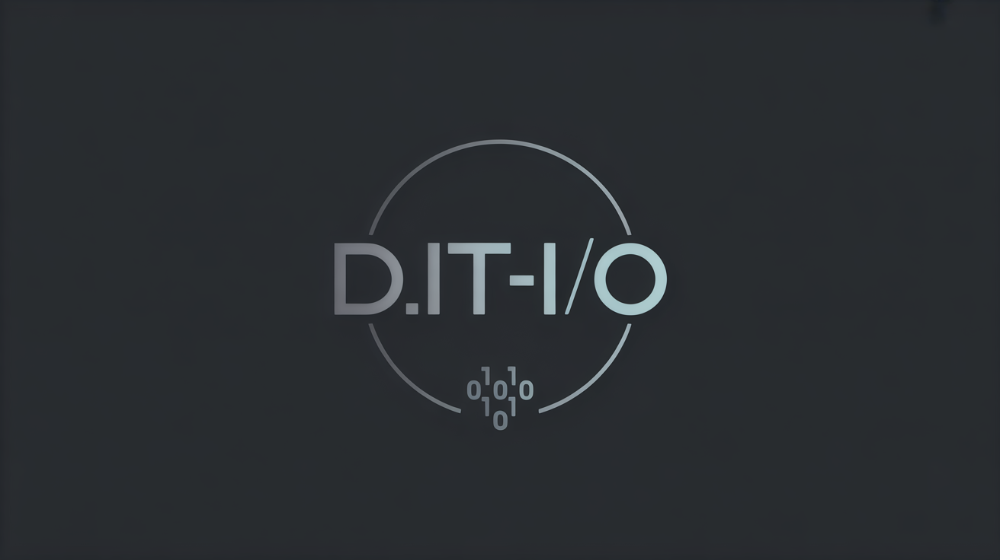

Sep 25, 2025
Generalforsamling 2025
Foreningens første generalforsamling!
Lokasjon: Kommer!
Møt opp og avgjør hvem du vil at skal være i styret det neste året.
Kanskje du vil stille som kanidat?
til nettsiden til de nyoppstartetde linjeforeningen D.IT-I/O ved OsloMet!
Denne foreningen tilhører alle linjene som hører til under insitutt for informasjonsteknologi.
Vil du vite mer, eller bli med?
Ta en titt på om foreningen, så får du vite mer!
Mer info kommer!
Denne siden er midlertidig og WIP intill noen har ordnet noe bedre.
Vil du lage bidra til denne nettsiden eller lage en en ny nettside til linjeforeningen?
Gjør PR på repoet til denne siden
eller lag noe nytt, og flytt repoet linjeforeningens github organiasjonen.
Her er forslag til krav hvis du vil lage en ny nettside.
Lag gjerne PR hvis du har noe forslag til endringer der også.

*Midlertidig AI generert logo, bør lages noe ordentlig på et tidspunkt. Sånn at man blant annet har SVG.
Har du et en ide og design som vi kan bli vår permanente logo? Ta kontakt på eposten under eller styrets medlemmer!
Er du en student med spørsmål eller forslag, til forengingen, eller en bedrift som har lyst å gjøre noe for foreningens medlemmer?
Ta kontakt på sett inn epost her!
Foreningens første generalforsamling!
Lokasjon: Kommer!
Møt opp og avgjør hvem du vil at skal være i styret det neste året.
Kanskje du vil stille som kanidat?